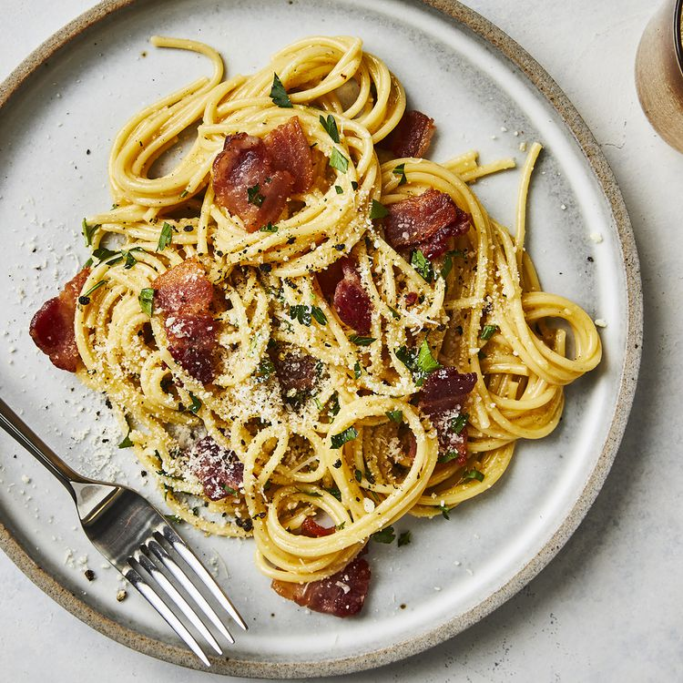

Descripton
Ingredients
- 1 pound spaghetti
- 2 tablespoons olive oil, divided, or as needed
- 8 slices bacon, diced
- 1 onion, chopped
- 1 clove garlic, minced
- ¼ cup dry white wine
- 4 large eggs, beaten
Steps
- Bring a large pot of lightly salted water to a boil. Cook spaghetti in boiling water, stirring occasionally, until tender yet firm to the bite, about 12 minutes. Drain, toss spaghetti with 1 tablespoon olive oil, and set aside.
- Place diced bacon in a large skillet over medium heat; cook and stir until evenly browned, about 10 minutes. Drain bacon on paper towels, reserving 2 tablespoons bacon fat in the skillet.